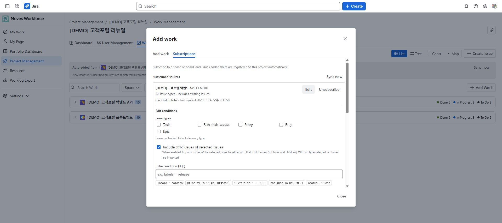

검토 초안: 2026-10-04 지정된 staging의 영어 화면을 촬영했습니다. 화면 이미지는 한·영 가이드가 공통으로 사용합니다. 배포 버전과 역할별 접근·저장 동작은 아직 검증 중입니다. 구독·간트·맵의 제공 여부는 staging에서 확인해야 합니다.
기존 Jira 이슈를 프로젝트에 연결하고 담당·협업자, 계획 작업량, 구조와 일정을 관리합니다. 작업 추가는 Jira 이슈 생성이 아니라 기존 이슈 연결입니다.
조회에는 프로젝트 관리 읽기, 연결·제외·편집에는 프로젝트 관리 쓰기가 필요합니다. Jira 이슈를 바꾸는 조작은 Jira 권한도 요구합니다.
| 조작 | 함께 확인할 Jira 권한 |
|---|---|
| 이슈 보기 | Browse Projects 및 해당 이슈의 열람 범위 |
| 일정 변경 | Edit Issues, Schedule Issues |
| 담당자 지정 | Assign Issues |
| 선후행 연결 | Link Issues |
| 계획 작업량 변경 | Edit Issues와 시간 추적 활성화 |
준비: Jira에서 열 수 있는 DEMO-12 Write test scenarios를 사용합니다. 이슈 키와 제목은 예시이므로 실제 키로 바꾸세요. 이슈가 없다면 Jira에서 먼저 준비합니다.
완료 기준: 프로젝트 작업 목록에서 이슈를 찾을 수 있습니다. 워크로그 기록을 원하면 나의 작업에서 이 이슈를 선택합니다. 프로젝트 인력 등록과 Jira 담당자 지정은 따로 확인해야 합니다.
일괄 변경을 사용할 때는 변경할 이슈만 선택하고 시작일·종료일·예상 공수 중 변경할 항목을 확인합니다. 일괄 적용 창에는 담당자 변경 항목이 없습니다. 빈 필드는 유지되는 항목이므로 값을 지우는 의도로 사용하지 않습니다. 예를 들어 조직의 1일 기준이 8시간이면 1MD는 8시간입니다. 저장 후 선택한 이슈의 날짜·예상 시간 등을 Jira와 앱에서 확인하세요. 날짜가 없으면 간트나 일정 캘린더에서 막대가 보이지 않을 수 있습니다.
처음에는 수동 연결로 대상과 결과를 확인한 뒤 구독을 설정합니다. 구독 미리보기에서 기존 포함 대상, 향후 포함 조건과 다른 프로젝트에 속해 제외되는 이슈를 확인하세요. 검색 결과 전체를 바로 선택하거나 구독을 저장하는 것만으로 모든 이슈가 즉시 연결된다고 판단하지 않습니다.
이슈는 앱 프로젝트 하나에 소속됩니다. 다른 프로젝트에서 가져오는 경우 연결과 분석 귀속이 달라질 수 있으므로 이동 안내를 확인합니다. 프로젝트에서 제외는 연결을 해제하며 Jira 이슈를 삭제하지 않습니다.
| 보기 | 주 용도 |
|---|---|
| 목록 | 검색·필터·셀 편집·선택 작업 일괄 변경 |
| 트리 | 폴더와 상하위 구조 정리 |
| 간트 | 기간·선후행·마일스톤을 일정 축에서 확인 |
| 맵 | 작업 구조를 읽기 전용 관계도로 확인 |
트리·간트·맵은 작업 구조를 공유합니다. 앱의 폴더·상위 지정과 Jira 자체의 이슈 계층은 구분하세요. 간트에서 막대를 옮기면 실제 이슈 일정이 바뀔 수 있습니다.
예시 프로젝트의 간트. 폴더 계층, 작업 기간과 선후행 연결을 확인할 수 있습니다.
계획 작업량은 MD 단위입니다. 예를 들어 1MD가 8시간인 조직에서 2MD는 16시간의 계획입니다. 실제 투입 시간과 혼동하지 마세요.
작업 추가 창의 구독 설정에서 소스 스페이스·조건을 지정하고 미리보기를 확인합니다. 기존 이슈까지 가져올지, 이후 생성되는 이슈부터 가져올지 선택한 뒤 저장합니다.

작업 추가 창의 Subscriptions 탭. 기존 구독과 신규 구독 영역을 구분합니다.

기존 구독의 이슈 유형, 하위 작업 포함과 JQL 조건 편집 영역. 저장하지 않았습니다.
담당자는 책임자 한 명, 동료는 함께 수행하는 여러 사람입니다. 담당자 변경과 동료 목록은 별개입니다. 변경 후 My Work 검색에 반영되기까지 시간이 걸리면 먼저 Jira 이슈의 저장 결과를 확인합니다. 프로젝트 인력 명단도 별도로 관리해야 합니다.
경로: 프로젝트 상세 → Work Management. 아래 동작은 보기만 바꾸는 기능과 실제 Jira 필드 또는 앱 연결을 저장하는 기능을 구분합니다.
| 버튼·입력 항목 | 기능·사용 조건·변경 대상 | 결과 확인과 문제 대응 |
|---|---|---|
| 목록·트리·간트·맵 | 목록은 검색·셀 변경·일괄 적용, 트리는 계층, 간트는 일정·선후행, 맵은 읽기 전용 구조 조회에 사용합니다. | 권한에 따라 선택지가 달라집니다. 트리·간트·맵의 공유 필터와 목록의 독립 검색 조건을 구분합니다. |
| 작업 추가·선택·프로젝트 이동 확인 | 기존 Jira 이슈를 앱 프로젝트에 연결합니다. 다른 프로젝트의 작업을 가져오면 앱 귀속과 시간·비용 분석 대상이 이동합니다. | 이전 프로젝트 안내를 읽고 가져오기 또는 해당 작업 제외를 선택합니다. 이슈 자체를 삭제하는 이동이 아닙니다. |
| Jira 작업 생성 | 등록된 스페이스 중 생성 권한이 있는 곳에서 유형·제목 등으로 실제 Jira 이슈를 생성한 뒤 프로젝트에 연결합니다. | 지원하지 않는 필수 필드가 있으면 Jira에서 생성한 후 작업 추가로 연결합니다. 생성 성공·연결 실패는 기존 키를 다시 연결하고 새로 생성하지 않습니다. |
| 일괄 적용: 시작일·기한·계획 MD | 선택 이슈에 세 항목 중 입력한 값만 적용합니다. 담당자 필드는 없습니다. 빈 값은 유지하며 1MD는 조직의 하루 근무시간입니다. | 하나 이상 입력하고 날짜 순서를 확인합니다. 실행 중에는 닫기·취소가 제한됩니다. 적용 결과를 이슈별로 확인합니다. |
| 실패 건만 재시도 | 직전 실행에서 실패한 이슈에 같은 변경을 재시도합니다. 날짜 저장 후 계획 MD가 실패하면 날짜 변경은 이미 남아 있을 수 있습니다. | 실패를 전체 롤백으로 해석하지 않습니다. Edit Issues·Schedule Issues와 시간 추적 필드를 확인한 뒤 재시도합니다. |
| 담당자·동료 편집 | 담당자는 한 명, 동료는 여러 명입니다. 각 이슈의 편집 동작으로 변경하며 프로젝트 명부 추가와 별개입니다. | Assign Issues 등 해당 Jira 권한을 확인하고 원본 저장 결과를 확인합니다. |
| 간트 확대·축소·필터 | 일·주·월 축과 담당자·상태·유형·스페이스·폴더 필터를 바꿉니다. 필터는 데이터를 삭제하거나 일정을 변경하지 않습니다. | 필터로 가려진 작업을 누락으로 판단하지 않습니다. 폴더 필터는 트리·간트 사이에서 공유됩니다. |
| 간트 막대 이동·일정 편집 | 실제 Jira 시작일·기한을 저장하는 동작입니다. 읽기 전용에서는 스크롤·확대·펼치기만 가능합니다. | 이동 후 날짜를 확인하고 거부되면 일정 권한과 시작일≤기한을 확인합니다. |
| 상위 이슈·선후행 연결·해제 | 앱의 작업 계층·관계와 Jira 관계를 정리합니다. 자기 참조·순환·다른 프로젝트 작업 연결은 거부될 수 있습니다. | 변경한 구조를 트리·간트에서 확인합니다. Jira 자체의 지원 계층과 앱 폴더 구조를 구분하고 Link Issues 권한도 확인합니다. |
| 폴더 생성·이름·이동·작업 배치·삭제 | 앱 작업을 묶는 폴더입니다. 삭제하면 내용은 상위 폴더 또는 루트로 이동하며 Jira 이슈는 삭제되지 않습니다. | 부모 이슈가 있는 작업은 먼저 상위 관계를 해제해야 폴더로 이동할 수 있습니다. 폴더는 자신의 하위로 이동할 수 없습니다. |
| 프로젝트에서 제외 | 앱 프로젝트 연결을 해제합니다. Jira 원본 이슈·워크로그 삭제와 다릅니다. | 대상 키와 분석 귀속 영향을 확인합니다. 문서가 이슈 속성에 저장된 경우 다시 연결할 때 관계가 복원될 수 있습니다. |
| 구독 소스·고급 조건 | Jira 스페이스를 구독합니다. 프로젝트당 최대 10개이며 동일 소스는 다른 프로젝트가 중복 구독할 수 없습니다. | 이미 구독 중인 소스와 접근 권한을 확인합니다. 소스를 바꾸려면 기존 구독을 해제하고 새 소스를 구독합니다. |
| 구독 유형·하위 작업·추가 JQL | 유형 미선택은 전체 유형입니다. 하위 작업 포함은 선택 유형의 자식도 가져오며 추가 JQL은 AND로 결합합니다. | currentUser()처럼 조회 사용자에 의존하는 함수는 사용할 수 없습니다. 미리보기의 포함·충돌·이미 등록 수를 확인합니다. |
| 구독 기본 예상 시간 | 시간(h) 단위이며 최대 100시간입니다. 기존 Original Estimate가 없는 신규 편입 작업만 채우고 기존 값을 덮어쓰지 않습니다. | 일괄 적용의 MD와 단위를 구분합니다. 빈 값은 자동 채움을 사용하지 않습니다. |
| 기존 작업도 가져오기·구독 추가 | 체크하면 기존 일치 이슈도 가져오고 해제하면 구독 후 생성되는 이슈부터 처리합니다. 기존 편입은 비동기로 이어질 수 있습니다. | 가져오기 지연·실패가 구독 생성 취소를 의미하지 않습니다. 목록과 다음 동기화 결과를 확인하고 같은 구독을 중복 생성하지 않습니다. |
| 지금 동기화 | 시간별 자동 확인을 기다리지 않고 구독 조건의 작업 편입을 확인합니다. 새로 생성한 Jira 작업은 검색 색인 지연으로 바로 보이지 않을 수 있습니다. | 부분 적용 안내가 있으면 나머지는 다음 동기화로 이어질 수 있습니다. 전체를 바로 다시 수동 추가하지 않습니다. |
| 조건 수정·일시 중지·해제 | 수정 조건은 다음 동기화부터 적용됩니다. 중지·해제·조건 축소는 기존 편입 이슈를 프로젝트에서 제거하지 않습니다. | 진행 중 기존 작업 가져오기가 중단될 수 있습니다. 기존 작업 제외는 별도로 수행하고 구독 상태·마지막 동기화를 확인합니다. |